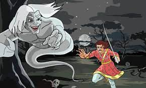

<!DOCTYPE html>
<html lang="en">
<head>
    <meta charset="UTF-8">
    <meta http-equiv="X-UA-Compatible" content="IE=edge">
    <meta name="viewport" content="width=device-width, initial-scale=1.0">
    <title>chapter 9</title>
    <link rel="preconnect" href="https://fonts.googleapis.com">
<link rel="preconnect" href="https://fonts.gstatic.com" crossorigin>
<link href="https://fonts.googleapis.com/css2?family=Poppins&display=swap" rel="stylesheet">
</head>
<body>
    <div align="center">
        <h1>
            
            <u>
                Chapter 9 Of a High-Minded Family
            </u>
        </h1>
    </div>
    <table width="90%" align="center" >
        <tr>
            <td style="font-family: 'Poppins', sans-serif;">
                In the venerable city of Bardwan, O warrior king! (quoth the Vampire) during the reign of 
                the mighty Rupsen, flourished one Rajeshwar, a Rajput warrior of distinguished fame. By his 
                valour and conduct he had risen from the lowest ranks of the army to command it as its 
                captain. And arrived at that dignity, he did not put a stop to all improvements, like other 
                chiefs, who rejoice to rest and return thanks. On the contrary, he became such a reformer 
                that, to some extent, he remodelled the art of war. 
                <br>
                <br>
                Instead of attending to rules and regulations, drawn up in their studies by pandits and 
                Brahmans, he consulted chiefly his own experience and judgment. He threw aside the 
                systematic plans of campaigns laid down in the Shastras or books of the ancients, and he 
                acted upon the spur of the moment. He displayed a skill in the choice of ground, in the use 
                of light troops, and in securing his own supplies whilst he cut off those of the enemy, which 
                Kartikaya himself, God of War, might have envied. Finding that the bows of his troops were 
                clumsy and slow to use, he had them all changed before compelled so to do by defeat; he 
                also gave his attention to the sword handles, which cramped the men's grasp but which 
                having been used for eighteen hundred years were considered perfect weapons. And having 
                organized a special corps of warriors using fire arrows, he soon brought it to such 
                perfection that, by using it against the elephants of his enemies, he gained many a 
                campaign.
                
        </td>
        <td>
            
        </td>
        <td style="font-family: 'Poppins', sans-serif;">
            One instance of his superior judgment I am about to quote to thee, O Vikram, after which I
            return to my tale; for thou art truly a warrior king, very likely to imitate the innovations of 
            the great general Rajeshwar. 
            (A grunt from the monarch was the result of the Vampire's sneer.) 
            He found his master's armies recruited from Northern Hindustan, and officered by 
            Kshatriya warriors, who grew great only because they grew old and - fat. Thus the energy 
            and talent of the younger men were wasted in troubles and disorders; whilst the seniors 
            were often so ancient that they could not mount their chargers unaided, nor, when they 
            were mounted, could they see anything a dozen yards before them. But they had served in a
            certain obsolete campaign, and until Rajeshwar gave them pensions and dismissals, they 
            claimed a right to take first part in all campaigns present and future. 
            <br>
            <br>
            The commander-inchief refused to use any captain who could not stand steady on his legs, or endure the sun 
            for a whole day. When a soldier distinguished himself in action, he raised him to the powers
            and privileges of the warrior caste. And whereas it had been the habit to lavish circles and 
            bars of silver and other metals upon all those who had joined in the war, whether they had 
            sat behind a heap of sand or had been foremost to attack the foe, he broke through the 
            pernicious custom, and he rendered the honour valuable by conferring it only upon the 
            deserving. I need hardly say that, in an inordinately short space of time, his army beat 
            every king and general that opposed it.
        </td>
    </tr>
    </table>
    <br>
    <br>
    <table width="90%" align="center" >
        <tr>
            <td style="font-family: 'Poppins', sans-serif;">
                One day the great commander-in-chief was seated in a certain room near the threshold of 
his gate, when the voices of a number of people outside were heard. Rajeshwar asked, 
"Who is at the door, and what is the meaning of the noise I hear?" The porter replied, "It 
is a fine thing your honour has asked. Many persons come sitting at the door of the rich for
the purpose of obtaining a livelihood and wealth. When they meet together they talk of 
various things: it is these very people who are now making this noise." 
Rajeshwar, on hearing this, remained silent. 
In the meantime a traveller, a Rajput, Birbal by name, hoping to obtain employment, came 
from the southern quarter to the palace of the chief. The porter having listened to his 
story, made the circumstance known to his master, saying, "O chief! an armed man has 
arrived here, hoping to obtain employment, and is standing at the door. If I receive a 
command he shall be brought into your honour's presence." 
"Bring him in," cried the commander-in-chief. 
The porter brought him in, and Rajeshwar inquired, "O Rajput, who and what art thou?" 
Birbal submitted that he was a person of distinguished fame for the use of weapons, and 
that his name for fidelity and velour had gone forth to the utmost ends of BharatKandha India. 
The chief was well accustomed to this style of self introduction, and its only effect upon his
mind was a wish to shame the man by showing him that he had not the least knowledge of 
weapons. He therefore bade him bare his blade and perform some feat. 
<br>

Birbal at once drew his good sword. Guessing the thoughts which were hovering about the 
chief's mind, he put forth his left hand, extending the forefinger upwards, waved his blade 
like the arm of a demon round his head, and, with a dexterous stroke, so shaved off a bit 
of nail that it fell to the ground, and not a drop of blood appeared upon the finger-tip. 
"Live for ever!" exclaimed Rajeshwar in admiration. He then addressed to the recruit a few 
questions concerning the art of war, or rather concerning his peculiar views of it. To all of 
which Birbal answered with a spirit and a judgment which convinced the hearer that he was 
no common sworder. 
20
Whereupon Rajeshwar bore off the new man at arms to the palace of the king Rupsen, and 
recommended that he should be engaged without delay. 
The king, being a man of few words and many ideas, after hearing his commander-in-chief, 
asked, "O Rajput, what shall I give thee for thy daily expenditure?" 
"Give me a thousand ounces of gold daily," said Birbal, "and then I shall have wherewithal to
live on." 
<br>
"Hast thou an army with thee?" exclaimed the king in the greatest astonishment. 
"I have not," responded the Rajput somewhat stiffly. "I have first, a wife; second, a son; 
third, a daughter; fourth, myself; there is no fifth person with me." 
All the people of the court on hearing this turned aside their heads to laugh, and even the 
women, who were peeping at the scene, covered their mouths with their veils. The Rajput 
was then dismissed the presence. 
It is, however, noticeable amongst you humans, that the world often takes you at your own 
valuation. Set a high price upon yourselves, and each man shall say to his neighbour, "In this
man there must be something." Tell everyone that you are brave, clever, generous, or even 
handsome, and after a time they will begin to believe you. And when thus you have attained 
success, it will be harder to unconvince them than it was to convince them. Thus - - 
"Listen not to him, sirrah," cried Raja Vikram to Dharma Dhwaj, the young prince, who had 
fallen a little way behind, and was giving ear attentively to the Vampire's ethics. "Listen to 
him not. And tell me, villain, with these ignoble principles of shine, what will become of 
modesty, humility, self-sacrifice, and a host of other Guna or good qualities which - which 
are good qualities?" 
<br>
"I know not," rejoined the Baital, "neither do I care. But my habitually inspiriting a 
succession of human bodies has taught me one fact. The wise man knows himself, and is, 
therefore, neither unduly humble nor elated, because he had no more to do with making 
himself than with the cut of his cloak, or with the fitness of his loin-cloth. But the fool 
either loses his head by comparing himself with still greater fools, or is prostrated when he 
finds himself inferior to other and lesser fools. This shyness he calls modesty, humility, and 
so forth. Now, whenever entering a corpse, whether it be of man, woman, or child, I feel 
peculiarly modest; I know that my tenement lately belonged to some conceited ass. And --" 
"Wouldst thou have me bump thy back against the ground?" asked Raja Vikram angrily. 
(The Baital muttered some reply scarcely intelligible about his having this time stumbled upon
21
a metaphysical thread of ideas, and then continued his story.)
            </td>
        </tr>
    </table>
    <table align="center" width="90%">
        <tr>
            <td align="center">
                

    </td>
    </tr>
</table>
<br>
        <br>
        <table width="50%" align="center">
            <tr>
                <td align="center"><a href="index.html">Index</a></td>
                <td align="center"><a href="page10.html">Next</a></td>
                <td align="center"><a href="page8.html">Previous</a></td>
            </tr>


        </table>
</body>
</html>